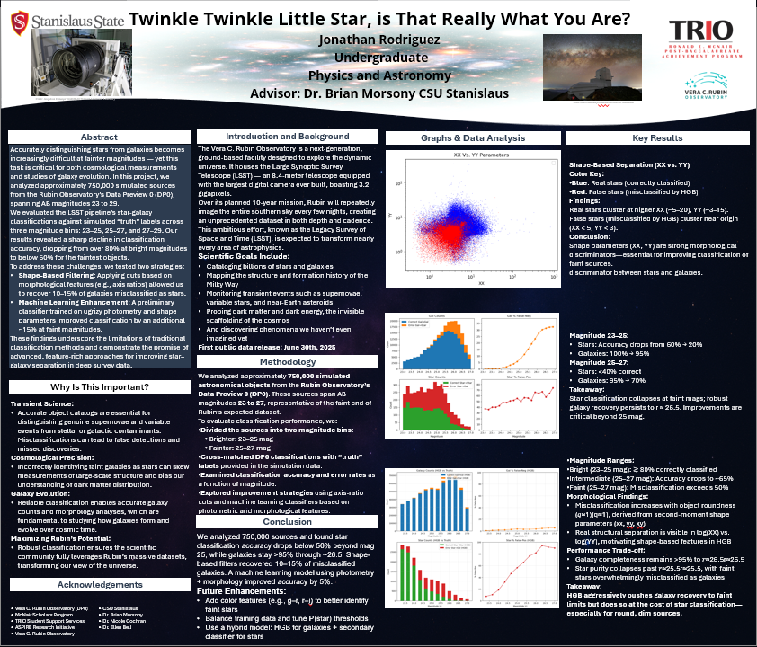

Communicating complex physics with curiosity and creativity.
I’m Jonathan James Guevara Rodriguez, an undergraduate physics student passionate about exploring the universe’s biggest mysteries. My interests focus on experimental physics, astrophysics, and the elusive world of dark matter — the stuff we know is out there but haven’t fully uncovered.
I’m currently working with large astronomical datasets, tackling projects like star-galaxy classification using LSST data. I enjoy the challenge of finding structure in the noise and pulling meaningful insights from complex data.
As a first-generation college student and science communicator, I’m committed to making physics approachable. I believe in translating complex concepts into engaging stories and visualizations — bridging the gap between data, discovery, and public understanding while contributing to experimental research on some of the universe’s most fundamental mysteries.
Below are examples of my analysis on Rubin LSST data:
Click the image to expand the full research poster
Email: jonathan@guevararodriguez.com
Website: JonathanJamesGuevaraRodriguez.com
You can download my latest CV below:
Download My CV